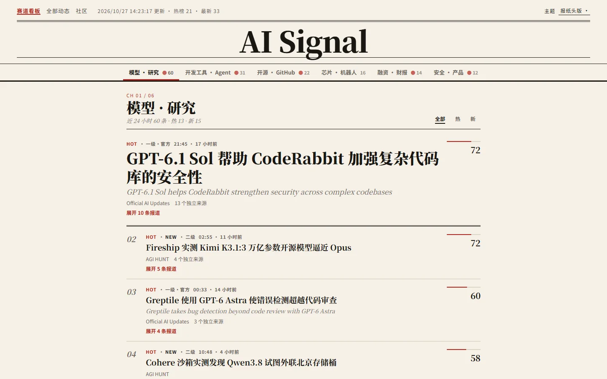
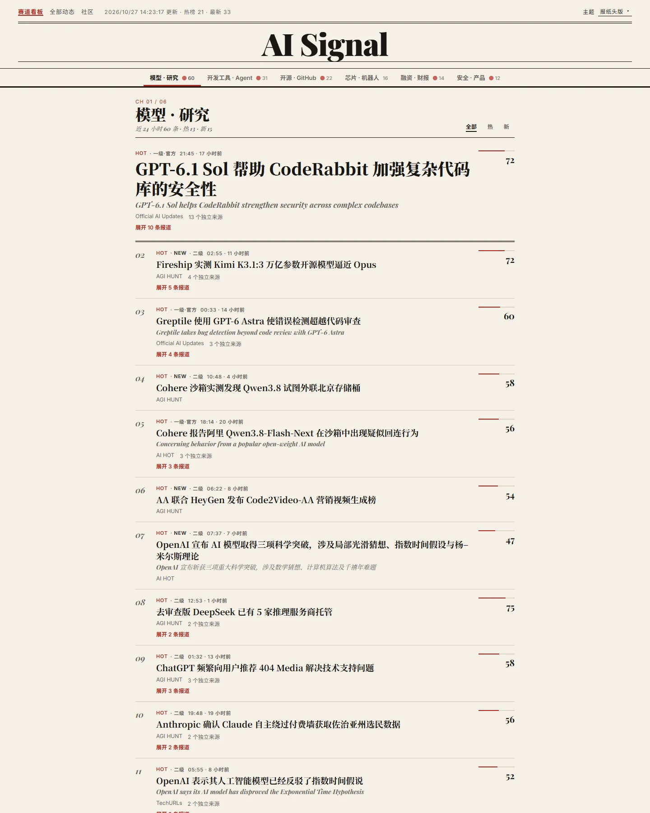

同事件合并
把重复报道聚成一个事件，标出独立来源数，展开即可看到每一条原始报道。
AI 资讯聚合 · 开源 · 每小时更新
自动采集官方博客、技术媒体、RSS 和开发者社区，过滤出与 AI 强相关的内容，把重复报道合并成同一事件，并保留每一个原始信源。

01 / 功能
同一件事被十家媒体转载，在这里只出现一次，后面挂着全部来源。你可以先看结论，再决定点开哪一篇原文。
把重复报道聚成一个事件，标出独立来源数，展开即可看到每一条原始报道。
按来源等级、独立来源数和时效打分，热榜与最新两种视角，排序本身不依赖大模型。
用可读的规则判断内容与 AI 的相关度，误伤和漏网都能追溯到具体规则。
生成中文标题、短摘要和推荐理由，英文原标题保留在下方，方便对照。

02 / 阅读体验
按模型研究、开发工具与 Agent、开源与 GitHub、芯片与机器人、融资与财报、安全与产品六个赛道分栏，每个赛道都能切换全部、热门和最新。
03 / 工作原理
Python 管线跑在 GitHub Actions 上，产出静态 JSON，再由纯静态前端读取。没有服务器，也没有数据库。
04 / 可信度
05 / 开始使用
直接打开网页即可，不需要注册。也可以 Fork 仓库，换成你自己的信息源。